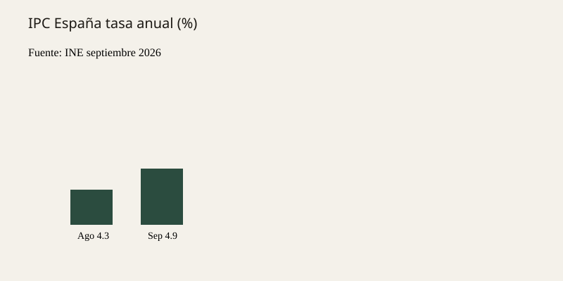

España · precios · 14 de octubre de 2026
El IPC de España se situó en el 4,9 % en septiembre.
_02.JPG)
Lo que coinciden las redacciones
El Instituto Nacional de Estadística publicó el 14 de octubre de 2026 los datos definitivos del Índice de Precios de Consumo de septiembre. La tasa de variación anual se situó en el 4,9 %, seis décimas por encima de la registrada en agosto (4,3 %). La inflación subyacente aumentó dos décimas, hasta el 3,1 %. La variación mensual del índice general fue del 0,3 %. El Índice de Precios de Consumo Armonizado (IPCA) situó su tasa anual en el 5,0 %.
El INE atribuye el repunte principalmente a los precios de los combustibles y lubricantes para vehículos personales, que subieron mientras que en septiembre de 2025 habían bajado, y a la evolución de los paquetes turísticos, cuyos precios descendieron menos que en el mismo mes del año anterior. Canal Sur, EFE y otras agencias coinciden en las cifras y en la atribución del organismo.
Lo que es solo una cita
Las valoraciones del Ministerio de Economía sobre la inflación de los alimentos desde el inicio de la guerra en Irán son interpretaciones oficiales, no el índice. Los comentarios de partidos sobre el “empobrecimiento” o el “éxito” de la política económica son opiniones, no datos del INE.
Mecanismo que el lector necesita
El IPC mide la evolución de los precios de una cesta de bienes y servicios consumidos por los hogares residentes en España. Las ponderaciones se actualizan periódicamente. Los combustibles tienen un peso relevante en el índice general; su volatilidad explica gran parte de los movimientos mensuales. La inflación subyacente excluye alimentos no elaborados y productos energéticos y da una señal más estable de la tendencia de fondo.
El indicador adelantado se publicó a finales de septiembre; los datos definitivos del 14 de octubre coinciden con ese avance. El IPCA es la versión armonizada para comparaciones europeas. Una tasa del 4,9 % es la más alta desde febrero de 2023. Ese hecho estadístico es independiente de las elecciones del 29 de noviembre.

Lo que esta historia no es
No es una afirmación de que todos los hogares hayan experimentado exactamente un 4,9 % de aumento. No es una predicción del IPC de octubre. No es un veredicto sobre la política económica. La fotografía es una toma de tipo del edificio del INE de 2016, no una imagen de un surtidor.
Artículos fuente y puntuaciones
| Medio | Titular | T | N | C |
|---|---|---|---|---|
| INE | Consumer Price Index (CPI). September 2026 | 100 | 0 | 100 |
| Canal Sur | El IPC sube al 4,9% en septiembre | 96 | 0 | 98 |
| INE | Flash estimate of the CPI — September 2026 | 99 | 0 | 100 |
Imágenes: Wikimedia Commons fotografía de tipo del edificio del INE. Gráfico SVG local con los datos publicados. onerror a SVG local. Sin píxeles de CDN de noticias.